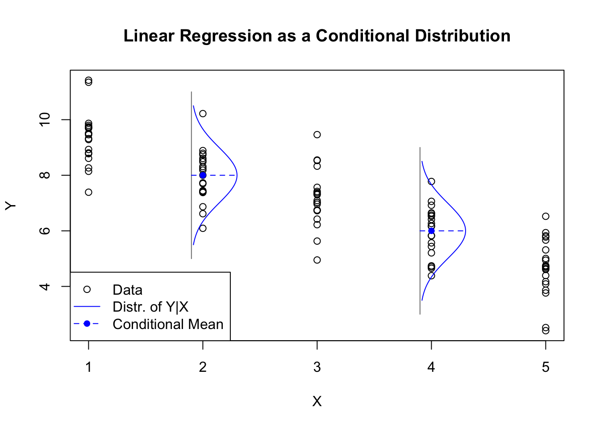
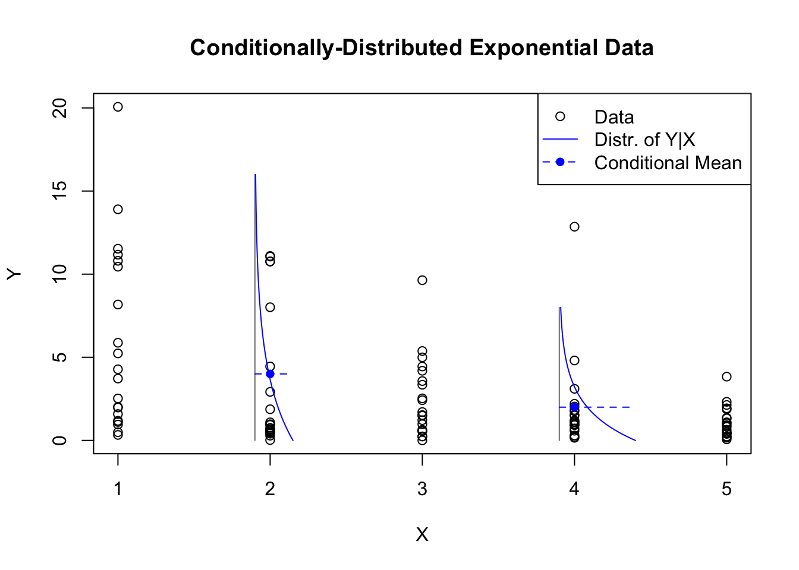

Here we open a new line of modeling, one with strong links to the linear model and to maximum likelihood theory, but without any connection to the least squares method or the assumption that our errors are IID normal. Generalized linear modeling (GLMs) provides a framework by which observations from any probability distribution can be linked to a linear combination of predictors, and so affords us a powerful and flexible tool to describe non-linear behavior using linear methods.1
So, let’s consider a new use case (or, perhaps, a new method of handling an existing use case). Previously, when we saw non-linear relationships between the response variable and the predictors, and non-normal error distributions, we used transformations to linearize the data and to bring the error distribution closer to normality. What if, instead of forcing the data toward normality, we tried to model the actual underlying generating process?
And yet we have spent so long working with linear models — where the response variable is a linear combination of betas and predictors — so it seems a shame to waste all that prior effort. How much of the linear model can we keep when we model non-linear behavior? Can we find a way to make OLS regression simply a special case of a broader category of models?
Revisiting the OLS model
Let’s review our previous assumptions about the data, so that we can identify what to keep and what we need to change. Previously, we assumed that \(Y\) was conditionally Normal, meaning that for every row vector of predictors \(\boldsymbol{x}_i\), the response variable will be IID-normally distributed around its prediction: \(y_i \sim \mathrm{Normal}(\boldsymbol{x}_i\boldsymbol{\beta},\sigma^2)\). Let’s isolate two key elements from these assumptions which we can use for non-linear modeling:
Conditional on a fixed vector of predictors \(\boldsymbol{x}_i\), the response variable \(y_i\) follows a particular probability distribution
For OLS regression, this distribution is the Normal distribution
The mean of the response variable \(\mu_i = \mathbb{E}[y_i]\) can be expressed as some function of the linear predictor \(\boldsymbol{x}_i\boldsymbol{\beta}\)
For OLS regression, the relationship is as simple as the identity function: \(\mu_i = \boldsymbol{x}_i\boldsymbol{\beta}\)
By keeping these two assumptions, we can significantly broaden the linear regression model to cover many different distributions, data types, and non-linear trends, while still including OLS regression as a special case
Understanding the conditional distribution of Y
First, I’d like to show examples of the distributions we might want to conditionally model with GLMs. We are already familiar with the Normal distribution, and we understand that differing values of the predictors create different normal distributions for the response:
Code
set.seed(1892)glm.norm.y <-10-rep(1:5,each=20) +rnorm(100)plot(rep(1:5,each=20),glm.norm.y,ylab='Y',xlab='X',main='Linear Regression as a Conditional Distribution')segments(x0=c(1.9,3.9),y0=c(5,3),y1=c(11,9),col='grey50')lines(1.9+dnorm(seq(10.5,5.5,-0.05),8,1),seq(10.5,5.5,-0.05),col='#0000ff')lines(3.9+dnorm(seq(8.5,3.5,-0.05),6,1),seq(8.5,3.5,-0.05),col='#0000ff')segments(x0=c(1.9,3.9),y0=c(8,6),x1=c(1.9,3.9)+dnorm(0),col='#0000ff',lty=2)points(c(2,4),c(8,6),pch=16,col='#0000ff')legend(x='bottomleft',pch=c(1,NA,16),lty=c(NA,1,2),col=c('black','#0000ff','#0000ff'),legend=c('Data','Distr. of Y|X','Conditional Mean'))

Regression targets presented as conditionally normal data
The figure above contains 100 observations, divided into 20 observations each at the locations \(X=\{1,2,3,4,5\}\). The generating function is simply \(Y = 10 - X + \varepsilon\), where \(\varepsilon\) has the standard Normal distribution. Changes in \(X\) result in changes for the mean of \(Y\). The classic regression framework would add a line of best fit (either exact or estimated) from upper left to lower right, but we can understand this data without it. All we need to understand the data is to know the conditional distribution of \(Y\) at each point \(x_i\).
What if the data were not conditionally Normal? Let’s examine some alternatives.
In the figure above, the values of \(X\) are the same as before, but the values of \(Y\) are Poisson distributed. You will recall that the Poisson is a discrete distribution, integer-valued. I have “jittered” the data so that you can see when there are multiple observations of the same value for \(Y\) at any given \(X\). I have also plotted a scaled Poisson mass function that shows how the distribution of \(Y\) is slightly different between \(X=2\) and \(X=4\). At every value of \(X\), the values of \(Y\) will be drawn from a Poisson distribution, so we certainly do not have IID normal errors. And yet, it does seem like the values of \(X\) can be used to meaningfully predict the values of \(Y\).
Let’s push this generalization even further away from the normal case we first learned. In the figure above, the values of X are the same as before, but the values of Y are Bernoulli distributed, i.e. they assume one of two values. Notice that when \(X\) is small, \(Y\) is most often 1, but as \(X\) increases, \(Y=0\) becomes more common. Although every value of \(Y\) is either 0 or 1, the mean can still be plotted and represents the probability of observing 1. We can see that the mean depends on \(X\), though the relationship does not seem linear. This data would be a terrible fit for linear regression, which would predict fitted probabilities greater than 1 and less than 0, and which assumes a continuous cloud of errors when at each observation \(x_i\) there are only two possible values and so only two possible errors.
Code
glm.exp.y <-rexp(100,1/rep(5:1,each=20))plot(rep(1:5,each=20),glm.exp.y,ylab='Y',xlab='X',main='Conditionally-Distributed Exponential Data')segments(x0=c(1.9,3.9),y0=c(0,0),y1=c(16,8),col='grey50')lines(1.9+dexp(seq(16,0,-0.1),1/4),seq(16,0,-0.1),col='#0000ff')lines(3.9+dexp(seq(8,0,-0.05),1/2),seq(8,0,-0.05),col='#0000ff')segments(x0=c(1.9,3.9),y0=c(4,2),x1=c(1.9,3.9)+c(1/4,1/2),col='#0000ff',lty=2)points(c(2,4),c(4,2),pch=16,col='#0000ff')legend(x='topright',pch=c(1,NA,16),lty=c(NA,1,2),col=c('black','#0000ff','#0000ff'),legend=c('Data','Distr. of Y|X','Conditional Mean'))

Conditionally-distributed exponential data
My last example comes from a continuous distribution, like the Normal distribution, but we can see again that a least squares regression line would be a poor fit to this exponential data. For starters, the data are bounded below by 0, while regressions would predict some possibility of negative values for \(Y\). Also, the distribution of errors is strongly asymmetric, with most values clustering near 0 but many extreme positive values and no extreme negative values. Finally, the data shows obvious heteroskedasticity. We would normally transform such data before modeling it with linear regression, but perhaps no transformation exists that would perfectly bring this data into alignment with OLS assumptions.
GLMs can be used to fit data from all of these distributions and also several others. In all the figures above, we have seen a visual link between the values of \(X\) and the shape of the distribution for \(Y\). The next section will provide a mathematical framework which allows us to express that link more precisely, and to show the common form behind each of these models.
GLMs were pioneered by Peter McCullagh and John Nelder in the 1980s; I would like to thank Peter McCullagh for teaching me these models during my own studies in the 2000s.↩︎